| 0-12% |
10-20% |
20-30% |
30-40% |
40-80% |
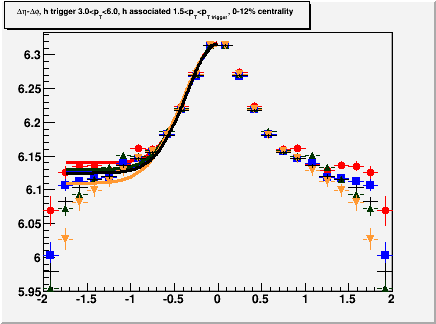 |
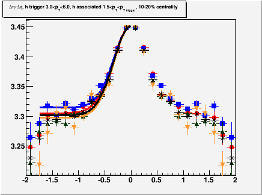 |
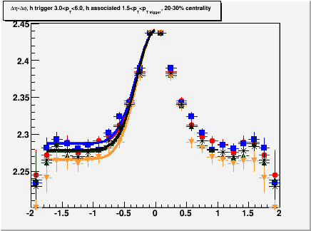 |
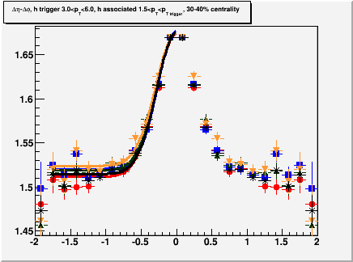 |
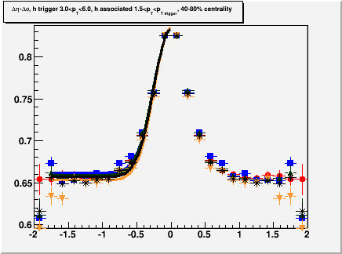 |
| Yield error: -8.67% (statistical
error on yield 1.7%) Width error: -5.9% (statistical error on width 1.3%) |
Yield error: 5.87% (statistical
error on yield 3.1%) Width error: 3.0% (statistical error on width 2.5%) |
Yield error: -3.29% (statistical
error on yield 5.4%) Width error: -2.3% (statistical error on width 4.6%) |
Yield error: 8.86% (statistical
error on yield 5.1%) Width error: 2.8% (statistical error on width 4.4%) |
Yield error: 4.95% (statistical
error on yield 3.1%) Width error: 1.0% (statistical error on width 2.6%) |
| 0-60% |
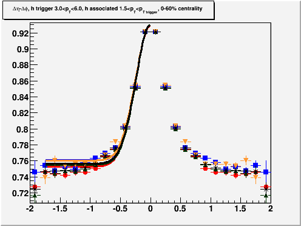 |
| Yield error: 8.9% (statistical
error on yield 2.2%) Width error: 2.3% (statistical error on width 2.0%) |
| 0-10% | 10-20% |
20-30% |
30-40% |
40-50% |
50-60% |
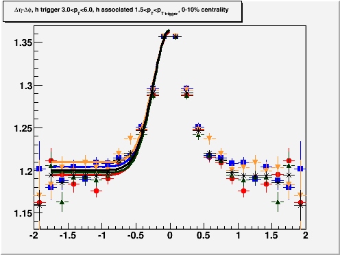 |
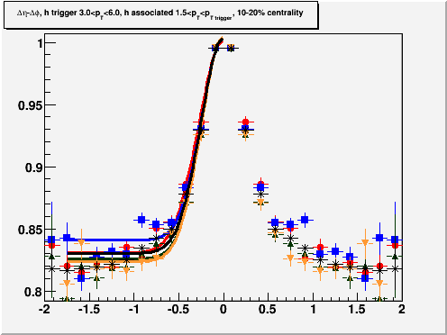 |
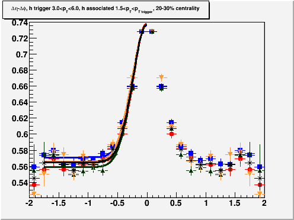 |
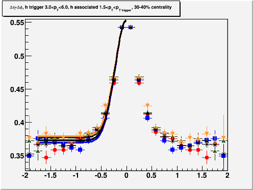 |
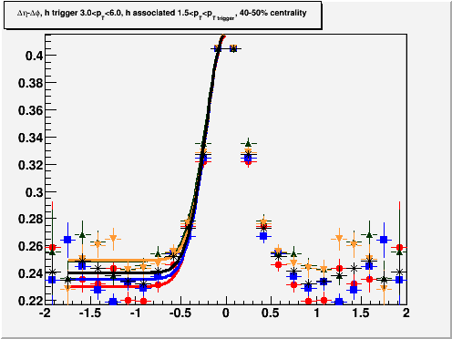 |
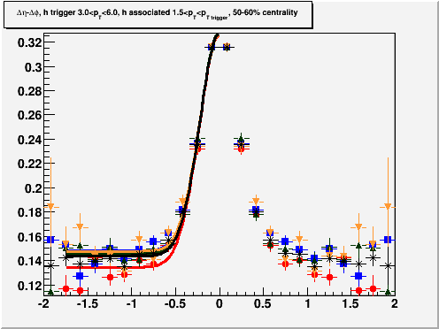 |
| Yield error: 10.9% (statistical
error on yield 5.2%) Width error: 3.1% (statistical error on width 4.7%) |
Yield error: 12.1% (statistical
error on yield 4.8%) Width error: 8.5% (statistical error on width 4.2%) |
Yield error: 1.1% (statistical
error on yield 4.2%) Width error: -4.5% (statistical error on width 3.8%) |
Yield error: 5.3% (statistical
error on yield 4.1%) Width error: -1.2% (statistical error on width 3.9%) |
Yield error: 13.6% (statistical
error on yield 4.0%) Width error: 4.4% (statistical error on width 3.8%) |
Yield error: 12.1% (statistical
error on yield 4.0%) Width error: 3.1% (statistical error on width 3.9%) |
| 0-60% |
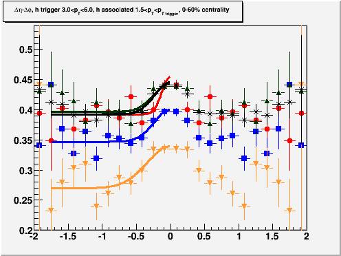 |
| Yield error: 8.9% (statistical
error on yield 2.2%) Width error: 2.4% (statistical error on width 2.0%) |
| 0-60% |
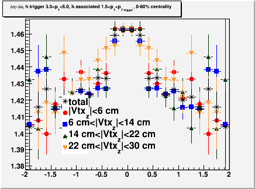 |
| Yield error: 5.2% (statistical
error on yield 22%) Width error: 2.6% (statistical error on width 17%) |